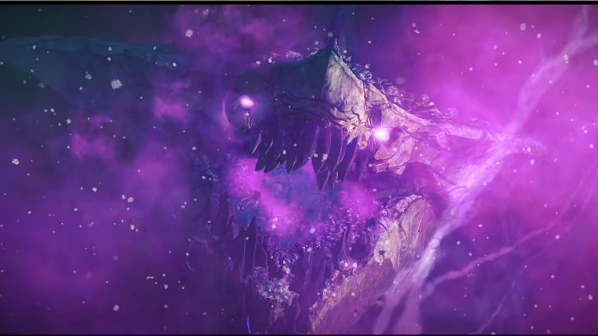

19.12.2018
Newsy | Living Story Season 4 Episode 5
All or Nothing
8 stycznia 2019, przyjdzie zmierzyć nam się z kolejnym, (piątym) epizodem Living World Sezonu 4. W odcnku zatyułowanym "All or Nothing" ponownie odwiedzimy Thunderhead Keep, oraz otrzymamy nową mapę nazwaną Thunderhead Peaks. Wszystko wskazuje na to, że po raz pierwszy od dłuższego czasu akcja będzie toczyć się w Shiverpeak'ach, tym razem w rejonach położonych na południu pomiędzy Timberline Falls na zachodzie, a Fields of Ruin na wschodzie.
Kolejnym nowym elementem gry, który wejdzie wraz z tym patchem jest nowy fractal Siren's Reef osadzony w klimatach dżungli. Na razie nie wiadomo, czy otrymamy również challenge mode, czy nie.
Powody do radości mają również amatorzy fashion wars'ów, oraz fani crafcenia legendarek. Po scepterze z ostatniego epizodu przyszedł czas na długi łuk. Pharus, bo tak będzie się nazywał, wygląda jak połączenie chaos i storm bow'a, a więc zacnie.
Rozwiniemy także kolejną masterkę "Bond of Faith", która usprawni naszą mobilność na mountach. Jeśli słusznie interpretuję to co zostało pokazana na trailerze pozwoli nam ona bezpiecznie lądować bez utraty tempa gdy podróżując na grzbiecie mounta natrafimy na uskok.
Ponadto patch oferuje nam:
- Popchnięcie do przodu wątku fabularnego, w którym coraz bardziej zbliżamy się do nieuchronnie czekającego na nas starcia z kryształowym smokiem Kralkatorrikiem
- Nowy ulpeszalny zestaw weaponów "Dragonsblood"
- Nowy (jak mniemam) zestaw statystyk typu "Diviner"
- Oraz dziewięć nowych "instabilities", które urozmaicą rozgrywkę amatorom fractali.
A na zakończenie oficjalny trailer: